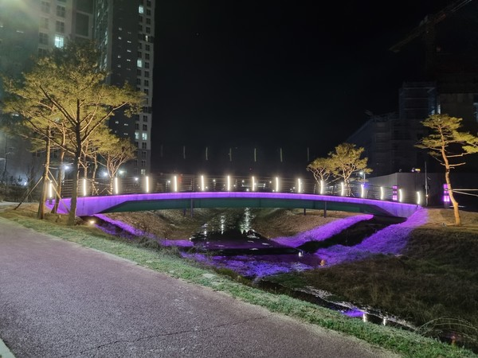

관광정보

-
무궁화동산 → 두계천 → 두계천 생태공원
-
사계고택 → 왕대산 입구 → 모원재 → 왕대산 정상 → 두계터널 → 사계고택
-
입압 유적공원 → 입압수변공원
-
배골 어린이공원 → 새터산근린공원 → 금암근린공원 → 농소천 → 계룡문
-
괴목정 → 두계천생태공원 → 황톳길 → 계룡역

-
계룡역 → 염선재 → 사계고택 → 모원재 → 신원재 → 계룡문 → 계룡역
-
청송약수터 → 국사봉 → 향적산 치유의 숲 → 무상사 → 청송약수터
-
종합운동장 → 파라디아아파트 → 엄사중학교 → 향한리굴다리 → 무상사 → 향한리굴다리 → 종합운동장

-
새터산근린공원 → 베골어린이공원 → 천마정 → 천마산 → 신성2차아파트 → 농소천 → 금암근린공원 → 새터산근린공원
